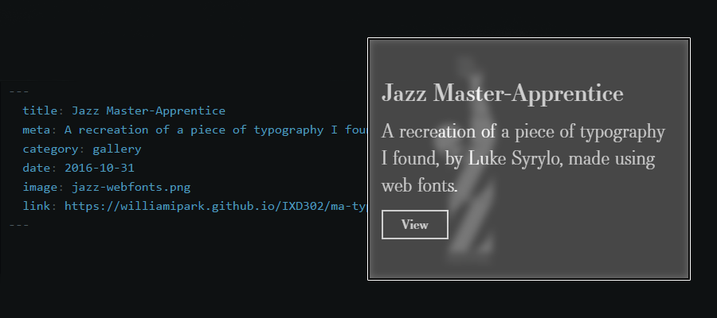

Building The Portfolio
It is only natural in my opinion, that the first article wrote on this website should be about the website itself. I’ll start with what I wanted this website to be.
Core Goals
When starting a project it is important to have a vision of where it is headed. There is a time for experimentation, where no vision can aid you explore the unknown, but I don’t believe a portfolio should be that time. To get a vision of what I wanted this website to be I had goals that I wanted to meet with this website.
It needed to be:
- Reactive. The user should have an idea of what to expect, and the website should meet that expectation.
- Responsive. It shouldn’t matter where the website is being viewed. The meat of the content should still be viewable.
- Readable. Text should be handled well in large and small amounts, and always be easy to read.
- Easy to update. Adding content should be a breeze. This ensures little effort is require to keep up to date.
Achieving the Goals
The websites goals are being met as I build the site, which at the time of writing is still under construction (content is important too!). The way I’m meeting these goals is by planning everything I do through sketches. Everything has been considered from layouts to the data structures I needed.
Some of the goals have solutions that worked, and were easy. The high contrast black and white design works well with my brand, and is easy to read, for example. The hardest goal to meet was to have the website easy to update.
Behind the scenes the website is running on Jekyll, a static site generator. It is very much geared towards blogging by default, but is easily extendable to add your own data to. I wanted to have my gallery posts update easily without me having to delve into HTML, so I created a data structure in Jekyll containing everything needed for a post on the gallery.

This allows me to update my website super fast, without much effort involved, which meets the goal of being easy to update! The same kind of data structure is used for these blog posts, and will also be used for my case study pages.